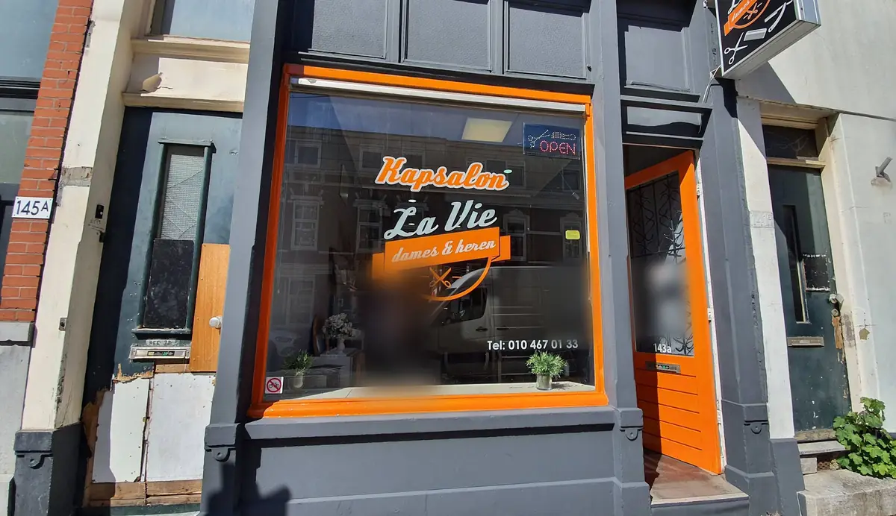
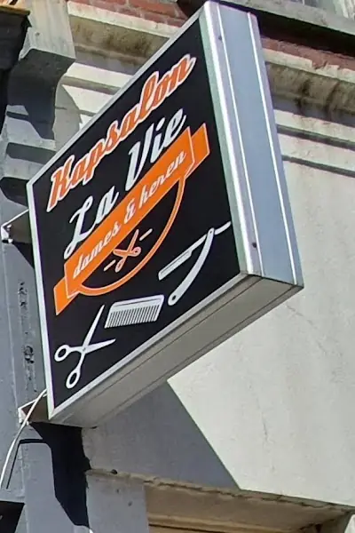
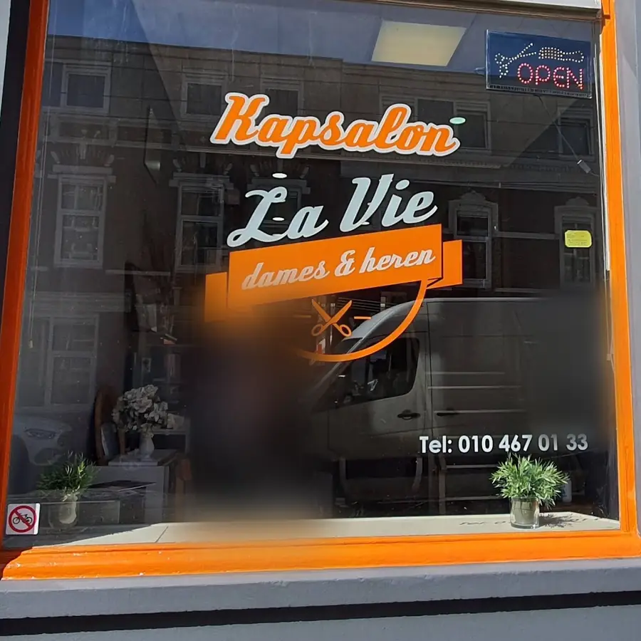
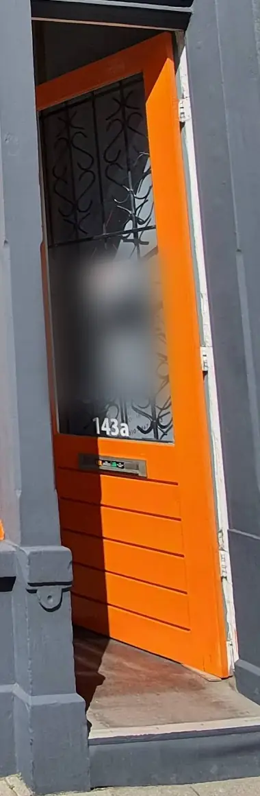

Zaagmolenstraat 143-A
Even binnenlopen bij La Vie.
Kapsalon in Rotterdam-Noord voor knippen en baard. App of bel om te vragen wanneer er plek is.
4,8 uit 123 reviews op Google
De zaak
Even langs het raam.
Swipe langs de pui en lees wat klanten over La Vie schrijven.

Het uithangbordZwart, oranje, met schaar en kam.
Het raamMet het logo op het glas.Er wordt geluisterd
Klanten schrijven over goed advies, oog voor detail en een coupe die wordt zoals je hem wilde.
Nummer 143aDe oranje deur naast het raam.Koffie en een praatje
In reviews komen de koffie, een drankje en een praatje in de stoel steeds terug.Bellen of binnenlopen
Klanten schrijven dat je even kunt bellen of er plek is, of gewoon binnenloopt.Foto's: de zaak op Google Maps (mei 2020).
Plek vragen
Wat mag het worden?
1Wat wil je laten doen?
2Hoe wil je het?
3Welke dag?
Reviews
123 keer beoordeeld, gemiddeld 4,8.
Komt al een aantal jaren elke week. Er wordt goed geluisterd naar wat je wilt, en er is tijd voor een praatje en een kop koffie.
RaymondKwam voor haar en baard. Strak en netjes afgewerkt, met oog voor detail, en het werd precies zoals gevraagd. Een aanrader.
F.Een afspraak maken via de telefoon ging makkelijk en de prijs viel mee. Zeer tevreden over de knipbeurt.
MustaphaSamengevat uit reviews op Google, niet letterlijk geciteerd.
Zo regel je het
Van bericht naar stoel.
Kies wat je wilt
Knippen, baard of allebei, en een dag. Naar de kiezer.
App of bel
Je bericht staat klaar voor WhatsApp. Liever praten? Bel 06 47 14 84 19.
Kom langs
Zaagmolenstraat 143-A, in het Oude Noorden van Rotterdam.
Vragen
Vragen die je misschien hebt.
Kan ik ook zonder afspraak binnenlopen?
Klanten schrijven dat je kunt bellen of er plek is, maar ook gewoon kunt binnenlopen. Wil je het zeker weten, bel dan even: 06 47 14 84 19.
Doen jullie ook baarden?
Ja. In de reviews gaat het over knippen en over baard, ook allebei in één keer.
Wat kost een knipbeurt?
De prijzen staan nog niet online. In reviews noemen klanten de prijs goed en niet duur. Vraag het gerust even als je appt of belt.
Kan ik een foto laten zien van wat ik wil?
Ja, kies in de kiezer "Iets nieuws" en stuur je foto mee in WhatsApp, of neem hem mee op je telefoon.
Waar zitten jullie precies?
Zaagmolenstraat 143-A, 3036 HJ Rotterdam, in het Oude Noorden. Open de route in Google Maps.
Route
Zaagmolenstraat 143-A, Oude Noorden.
Kapsalon La Vie
Zaagmolenstraat 143-A
3036 HJ Rotterdam
Wanneer er plek is? Bel of app even, dan hoor je het.
Haar te lang? App of bel La Vie.
Knippen, baard of allebei, aan de Zaagmolenstraat 143-A.